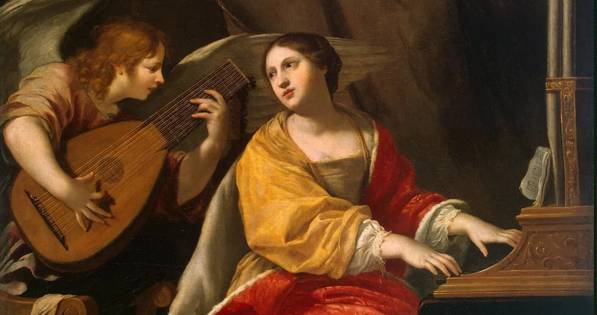
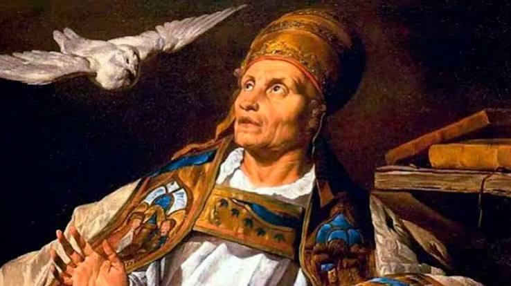
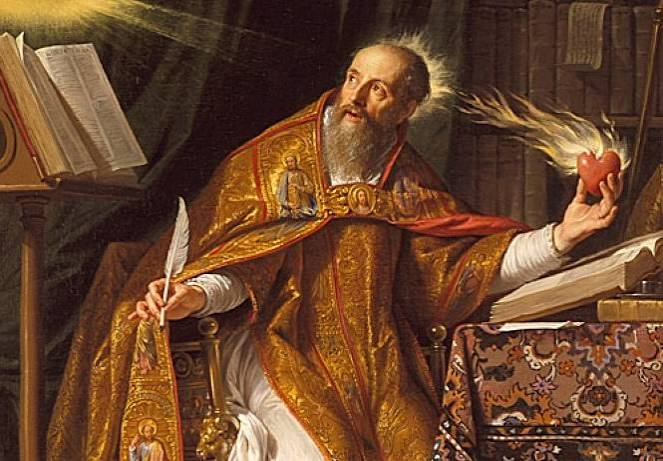

Servir à comunidade através do canto, unindo técnica musical, espiritualidade profunda e inspiração nos grandes santos patronos.
Cada integrante do ministério de música possui um papel específico para garantir a harmonia e a oração da assembleia:
Proclama a Palavra de Deus através do Salmo Responsorial no Ambão. Sua execução deve ser clara, meditativa e orante.
Sustenta e conduz o canto da assembleia sem sobrepor a sua voz, servindo como ponte de oração para a comunidade.
Oferece a base harmônica e o ritmo. Mantém o volume adequado aos momentos de silêncio, vibração ou recolhimento.
Harmoniza vozes e instrumentos, planeja o repertório com a equipe de liturgia e cuida da formação do grupo.
Ao longo da história da Igreja, santos se destacaram por sua devoção à música sacra, inspirando compositores e ministérios até os dias de hoje:

Mártir romana dos primeiros séculos. Diz a tradição que, enquanto os instrumentos ressoavam em seu casamento, ela cantava a Deus em seu coração.

Papa e Doutor da Igreja que unificou e organizou os cantos da liturgia romana, dando origem ao célebre Canto Gregoriano.

Autor da famosa frase "Quem canta, reza duas vezes". Escreveu extensamente sobre a beleza e o poder espiritual do canto sacro.
A música na Igreja não é um plano de fundo nem um show particular: é oração encarnada. O objetivo da Pastoral é conduzir a assembleia a viver profundamente a celebração.
O músico precisa vivenciar a mensagem do canto antes de transmiti-la com os lábios ou instrumentos.
Ensaios dedicados e busca constante por afinação e harmonia para oferecer o melhor ao serviço de Deus.
Ajustar o tom e o volume para dar voz à comunidade, e não se sobrepor a ela.
Responda às 4 perguntas abaixo para conferir seu entendimento sobre as diretrizes, funções e patronos da música: